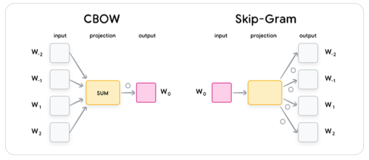

Embeddings
Definition
Embeddings are numerical representations of real-world data such as text, speech, image, or videos. They are expressed as low-dimensional vectors where the geometric distances of two vectors in the vector space is a projection of the relationships between the two real-world objects that the vectors represent.
Such low dimensional representation try to preserve the most of the "essential information" of the original objects.
Ideally the embeddings are created, so they place objects with similar semantic properties closer in the embedding space.
The Embeddings are usually obtained through different ML models, like Encoder-based Transformers such as BERT.
Usage
Semantic Search
- Precomputing the embeddings for billions items of the search space.
- Mapping query embeddings to the same embedding space.
- Efficient computing and retrieving of the nearest neighbors of the query embeddings in the search space.
Applications
- Retrieval
- Recommendations
- Features for ML Models
Types of Embeddings
Text Embeddings
Definition
They are created through a process: 1. Tokenisation 2. indexing 3. Embedding
Word Embeddings
Usage
Word embeddings can be directly used in some downstream tasks like Named Entity Recognition (NER).
Technologies
- GloVe
- SWIVEL
- Word2Vec
Word2Vec
Word2Vec is a family of model architectures that operates on the principle of “the semantic meaning of a word is defined by its neighbors”.
It uses a matrix of shape (size_of_vocabulary, size_of_each_embedding). This matrix can be used as a lookup table after the training process is completed using one of the following methods: - The Continuous bag of words (CBOW) is fast to train and is slightly more accurate for frequent words. - The skip-gram is inverse of that of CBOW, with the middle word being used to predict the surrounding words within a certain range. This approach is slower to train but works well with small data and is more accurate for rare words.

GloVe
It uses a co-occurrence matrix, which represents the relationships between words. Then GloVe then uses a factorization technique to learn word representations from the co-occurrence matrix.
SWIVEL
Unlike GloVE, it uses local windows to learn the word vectors by taking into account the co-occurrence of words within a fixed window of its neighboring words.
It is slightly less accurate than GloVe on average, but is considerably faster to train.
Document Embeddings
Definition
The evolution of the embeddings models can mainly be categorized into two stages: shallow Bag-of-words (BoW) models and deeper pretrained large language models (e.g., BERT).
Shallow BoW Models
Early document embedding works follow the bag-of-words (BoW) paradigm, assuming a document is an unordered collection of words. These early works include latent semantic analysis (LSA)7 and latent dirichlet allocation (LDA).
Another famous bag-of-words family of document embeddings is TF-IDF.
It has two major weaknesses: both the word ordering and the semantic meanings are ignored. BoW models fail to capture the sequential relationships between words.
Image & Multimodal Embeddings
Computation
Unimodal image embeddings can be derived in many ways: one of which is by training a CNN or Vision Transformer model on a large scale image classification task (for example, Imagenet), and then using the penultimate layer as the image embedding.
Structured Data Embeddings
Definition
Unlike unstructured data, where a pre-trained embedding model is typically available, we have to create the embedding model for the structured data since it would be specific to a particular application.
General Computation
Use dimensionality reductions techniques such as PCA.
Graph Embeddings
Definition
Graph embeddings are another embedding technique that lets you represent not only information about a specific object but also its neighbors.
Training
Two Tower Architecture
Current embedding models usually use dual encoder (two tower) architecture. For example, for the text embedding model used in question-answering, one tower is used to encode the queries and the other tower is used to encode the documents.

The training includes a pretraining (unsupervised learning) and fine tuning (supervised learning). Nowadays, the embedding models are usually directly initialized from foundation models such as BERT, T5, GPT, Gemini, CoCa.
Applications
Semi-Categorical Text
- Suppose you have a column "Location" with entries that are not coherent (e.g., "US", "USA", United States", etc.
- It is possible to use directly the Text Embeddings possibility
Text Embeddings
SentenceTransformer
- The solution is preferable when a plug-and-play model is needed.
- It does not require pre-tokenisation and post-distillation (e.g., MeanPooling)
- PCA can be applied to the output
from sentence_transformers import SentenceTransformer
from sklearn.decomposition import PCA
model = SentenceTransformer("all-MiniLM-L6-v2")
sentence_embeddings = model.encode(texts, convert_to_numpy=True)
pca = PCA(n_components=64)
reduced_embeddings = pca.fit_transform(sentence_embeddings)
AutoTokenizer + AutoModel
- The solution is preferable when it is needed more customisation and control over the embedding process
- It requires pre-tokenisation and post-distillation
- PCA can be applied to the output
from transformers import AutoTokenizer, AutoModel
import torch
from sklearn.decomposition import PCA
tokenizer = AutoTokenizer.from_pretrained('sentence-transformers/all-MiniLM-L6-v2')
model = AutoModel.from_pretrained('sentence-transformers/all-MiniLM-L6-v2')
inputs = tokenizer("This is a sentence.", return_tensors='pt')
outputs = model(**inputs)
# Get token embeddings (shape: [1, seq_len, hidden_dim])
token_embeddings = outputs.last_hidden_state
# Mean pooling (manual)
attention_mask = inputs['attention_mask']
mask = attention_mask.unsqueeze(-1).expand(token_embeddings.size()).float()
pooled = torch.sum(token_embeddings * mask, 1) / torch.clamp(mask.sum(1), min=1e-9)
pca = PCA(n_components=64)
reduced_embeddings = pca.fit_transform(pooled)